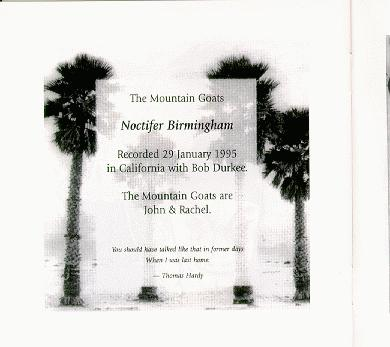
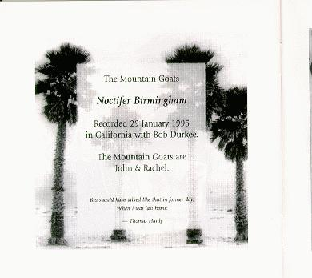

fast forward 2
 

title: fast forward 2
quote: you should have talked like that in former days when i was
last home. -- thomas hardy
format: cd (2 of them actually)
disc 1:
the body has a head - on the metro north
jad fair - futuristic lover
virginia dare - you kill me
beck - trouble all my days
doo rag - chunked & muddled
elektrik hannes - kwien e10
bill direen - spaghetti bolognaise
chris knox - we hate you
the hitsville house band - gimme all you lovin' *
furtips - converse the world
furtips - d.on scale
furtips - i can feel it in your smile
disc 2:
simon joyner - don't begrudge a man his funeral
gitbox! - 34/5 street
robyn hitchcock - statue with a walkman
chris knox - clog dance in a mirror
john davis - as i headed to the door
john davis - be careful!
virginia dare - i feel a siren
the mountain goats - noctifer birmingham
two dollar guitar - song for a dead friend
azalia snail - highway vice
the use of ashes - shyleen
kramer - i can watch
gitbox! - last night i dreamed of gary indiana
* yes it's a cover of everyone's favorite z.z. top song...
please mail any questions/comments/complaints, or just notes hello to:nall@themountaingoats.net